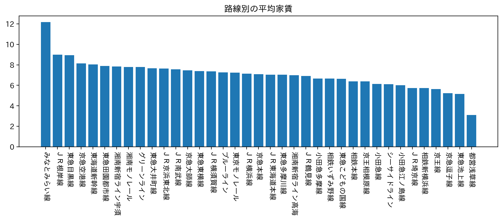

賃貸探し
地方生にピッタリな駅
ターゲットは地方生で、安さはとても重要視されるべきポイントだと考えている。
班には5人いるためこれらの平均情報から５つの線に分かれて別々に調べることにした。私は東急田園都市線を利用する生徒をターゲットにした場合を予想して調べた。

東急田園都市線
平均徒歩を見た時、二子新地駅、溝の口駅、高津駅の三つがデータからわかった。
物件数では、溝の口駅、宮前平駅、宮崎前駅が上がってきたためここで多くの物件を見つけることができることがわかった。

家賃は４つに分けて考えることができると思った。もちろん一番右が一番安いが、先ほど出した名前の駅が２番目に安い枠に全て入っておるのがわかる。
最後に家賃と徒歩から考えてみる。集中しているのは7.5万円のところであるが安さでみると南町田グランベリーパーク駅である。しかしここは徒歩で考えると遠すぎる。